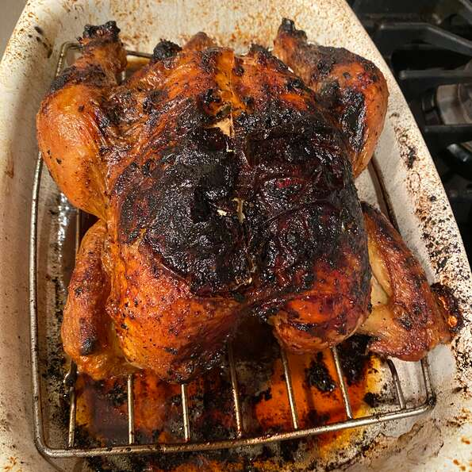

Juicy Roasted Chicken

Description:
My recipe for roasted chicken.
I've never had a chicken this juicy before.
This little trick works and makes the people eating it speechless!
Ingredients:
- 1 (3 pound) whole chicken, giblets removed
- salt and black pepper to taste
- tablespoon onion powder, or to taste
- ½ cup margarine, divided
- 1 stalk celery, leaves removed
Steps:
- Preheat oven to 350 degrees F (175 degrees C).
- Place chicken in a roasting pan, and season generously inside and out with salt and pepper.
Sprinkle inside and out with onion powder. Place 3 tablespoons margarine in the chicken cavity.
Arrange dollops of the remaining margarine around the chicken's exterior.
Cut the celery into 3 or 4 pieces, and place in the chicken cavity.
- Bake uncovered 1 hour and 15 minutes in the preheated oven,
to a minimum internal temperature of 180 degrees F (82 degrees C)
Remove from heat, and baste with melted margarine and drippings.
Cover with aluminum foil, and allow to rest about 30 minutes before serving.